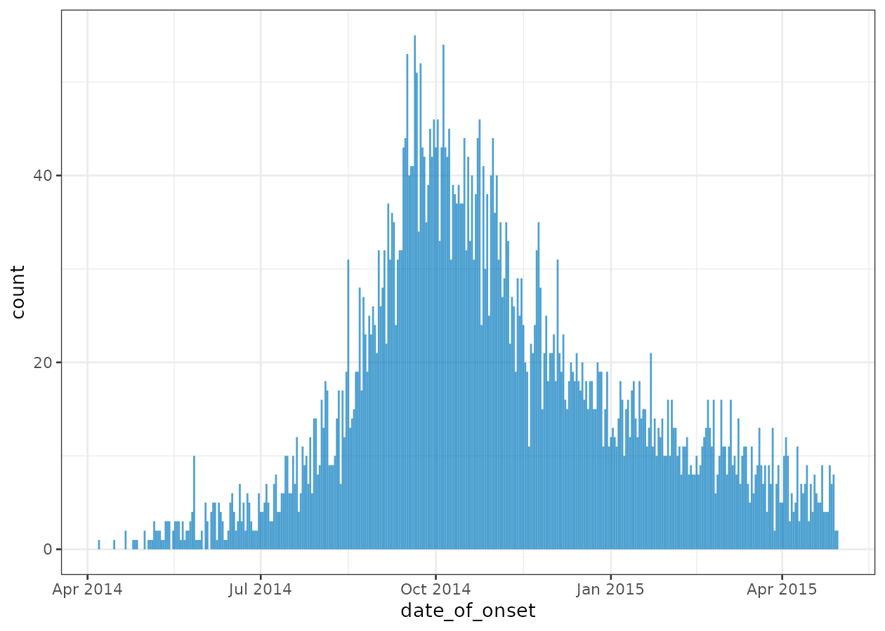
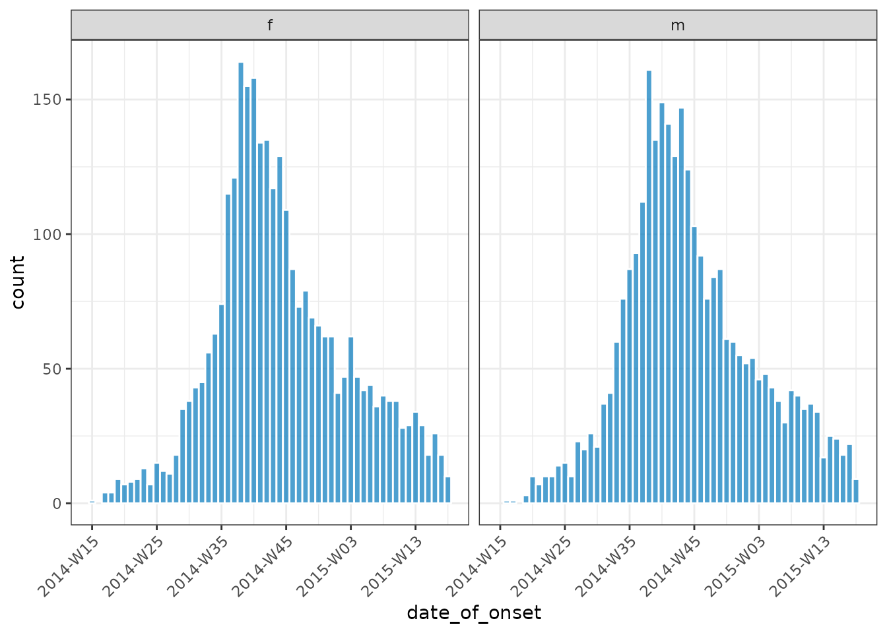
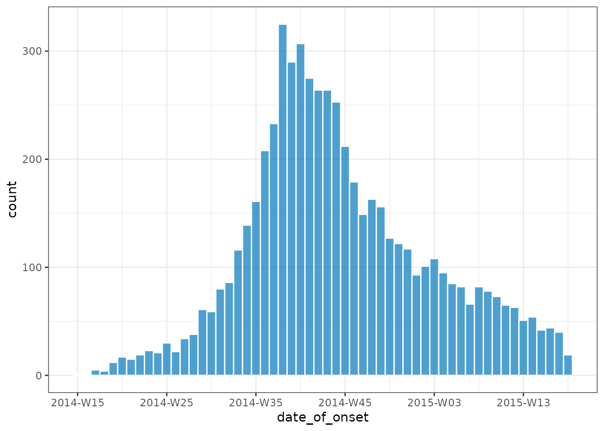

What does it do?
incidence2 is an R package that implements functions and classes to compute, handle and visualise incidence data. It aims to be intuitive to use for both interactive data exploration and as part of more robust outbreak analytic pipelines.
Overview
The main feature of the package is the incidence()
function which works on both linelist and pre-aggregated data sets. It
returns an object of class <incidence>. This is a
data frame subclass with some additional invariants. That is, an
<incidence> object must:
have one column representing the date index (this does not need to be a
dateobject but must have an inherent ordering over time);have one column representing the count variable (i.e. what is being counted) and one variable representing the associated count;
have zero or more columns representing groups;
not have duplicated rows with regards to the date and group variables.
Additional functionality
plot.incidence(): generate simple plots with reasonable defaults.regroup(): regroup incidence from different groups into one global incidence time series.keep_first()andkeep_last(): keep the rows corresponding to the first (or last) set of grouped dates (ordered by time) from an<incidence>object.complete_dates(): ensure every possible combination of date and groupings is represented with a count.cumulate(): calculate the cumulative incidence over time.print.incidence()andsummary.incidence()methods.as.data.frame.incidence()conversion method.Accessor functions for accessing underlying variables:
get_date_index(),get_count_variable(),get_count_value(),get_groups(),get_count_value_name(),get_count_variable_name(),get_date_index_name()andget_group_names().
Example usage: computing and plotting incidence
library(outbreaks) # for the underlying data
library(ggplot2) # For custom plotting later
library(incidence2)
#> Loading required package: gratesThis example uses the simulated Ebola Virus Disease (EVD) outbreak from the package outbreaks.
dat <- ebola_sim_clean$linelist
str(dat)
#> 'data.frame': 5829 obs. of 11 variables:
#> $ case_id : chr "d1fafd" "53371b" "f5c3d8" "6c286a" ...
#> $ generation : int 0 1 1 2 2 0 3 3 2 3 ...
#> $ date_of_infection : Date, format: NA "2014-04-09" ...
#> $ date_of_onset : Date, format: "2014-04-07" "2014-04-15" ...
#> $ date_of_hospitalisation: Date, format: "2014-04-17" "2014-04-20" ...
#> $ date_of_outcome : Date, format: "2014-04-19" NA ...
#> $ outcome : Factor w/ 2 levels "Death","Recover": NA NA 2 1 2 NA 2 1 2 1 ...
#> $ gender : Factor w/ 2 levels "f","m": 1 2 1 1 1 1 1 1 2 2 ...
#> $ hospital : Factor w/ 5 levels "Connaught Hospital",..: 2 1 3 NA 3 NA 1 4 3 5 ...
#> $ lon : num -13.2 -13.2 -13.2 -13.2 -13.2 ...
#> $ lat : num 8.47 8.46 8.48 8.46 8.45 ...To compute daily incidence we pass to incidence() a
data.frame of observation data. We must also pass the name of a
variable in the data that we can use to index the input. Note that
whilst we we refer to this index as the date_index there is
no restriction on it’s type save that it can be used to represent the
relative time of an observation:
(daily <- incidence(dat, date_index = "date_of_onset"))
#> # incidence: 367 x 3
#> date_index count_variable count
#> * <date> <chr> <int>
#> 1 2014-04-07 date_of_onset 1
#> 2 2014-04-15 date_of_onset 1
#> 3 2014-04-21 date_of_onset 2
#> 4 2014-04-25 date_of_onset 1
#> 5 2014-04-26 date_of_onset 1
#> 6 2014-04-27 date_of_onset 1
#> 7 2014-05-01 date_of_onset 2
#> 8 2014-05-03 date_of_onset 1
#> 9 2014-05-04 date_of_onset 1
#> 10 2014-05-05 date_of_onset 1
#> # … with 357 more rows
plot(daily)
The daily data is quite noisy, so we may want to pre group dates
prior to calculating the incidence. One way to do this is to utilise
functions from the grates package. Here
we use the as_isoweek() function to calculate the weekly
(starting on a Monday) incidence:
# 7 day incidence
weekly_dat <- transform(dat, date_of_onset = as_isoweek(date_of_onset))
(inci <- incidence(weekly_dat, date_index = "date_of_onset"))
#> # incidence: 56 x 3
#> date_index count_variable count
#> * <isowk> <chr> <int>
#> 1 2014-W15 date_of_onset 1
#> 2 2014-W16 date_of_onset 1
#> 3 2014-W17 date_of_onset 5
#> 4 2014-W18 date_of_onset 4
#> 5 2014-W19 date_of_onset 12
#> 6 2014-W20 date_of_onset 17
#> 7 2014-W21 date_of_onset 15
#> 8 2014-W22 date_of_onset 19
#> 9 2014-W23 date_of_onset 23
#> 10 2014-W24 date_of_onset 21
#> # … with 46 more rows
plot(inci, border_colour = "white")
We prefer grouping dates prior to calling incidence() as
it makes it very clear to readers of your code what transformations are
being applied to your input data. That said, it is such a common and
useful operation that we have integrated much of grates’ functionality
in to incidence2. We do this via an interval parameter
which can take values:
- week(s), isoweek(s) or weekly (mapping to
<grates_isoweek>); - epiweek(s) (mapping to
<grates_epiweek>); - month(s), yearmonth(s) or monthly
(
<grates_yearmonth>); - quarter(s), yearquarter(s) or quarterly
(
<grates_yearquarter>); - year(s) or yearly (
<grates_year>).
For example, the following is equivalent to the inci
output above:
# equivalent - using `interval` argument
(inci2 <- incidence(dat, date_index = "date_of_onset", interval = "isoweek"))
#> # incidence: 56 x 3
#> date_index count_variable count
#> * <isowk> <chr> <int>
#> 1 2014-W15 date_of_onset 1
#> 2 2014-W16 date_of_onset 1
#> 3 2014-W17 date_of_onset 5
#> 4 2014-W18 date_of_onset 4
#> 5 2014-W19 date_of_onset 12
#> 6 2014-W20 date_of_onset 17
#> 7 2014-W21 date_of_onset 15
#> 8 2014-W22 date_of_onset 19
#> 9 2014-W23 date_of_onset 23
#> 10 2014-W24 date_of_onset 21
#> # … with 46 more rows
identical(inci, inci2)
#> [1] TRUEIf we wish to aggregate by specified groups we can use the
groups argument. For instance, computing incidence by
gender:
(grouped_inci <- incidence(
dat,
date_index = "date_of_onset",
groups = "gender",
interval = "isoweek"
))
#> # incidence: 109 x 4
#> date_index gender count_variable count
#> * <isowk> <fct> <chr> <int>
#> 1 2014-W15 f date_of_onset 1
#> 2 2014-W16 m date_of_onset 1
#> 3 2014-W17 f date_of_onset 4
#> 4 2014-W17 m date_of_onset 1
#> 5 2014-W18 f date_of_onset 4
#> 6 2014-W19 f date_of_onset 9
#> 7 2014-W19 m date_of_onset 3
#> 8 2014-W20 f date_of_onset 7
#> 9 2014-W20 m date_of_onset 10
#> 10 2014-W21 f date_of_onset 8
#> # … with 99 more rowsFor grouped data, the plot method will create a faceted plot across groups:
plot(grouped_inci, border_colour = "white", angle = 45)
Similarly, incidence() also supports multiple date
inputs where the different date indices are used for filling the
resultant plot
(grouped_inci <- incidence(
dat,
date_index = c(
onset = "date_of_onset",
infection = "date_of_infection"
),
interval = "isoweek",
groups = "gender"
))
#> # incidence: 218 x 4
#> date_index gender count_variable count
#> * <isowk> <fct> <chr> <int>
#> 1 2014-W12 f infection 1
#> 2 2014-W15 f onset 1
#> 3 2014-W15 m infection 1
#> 4 2014-W16 f infection 1
#> 5 2014-W16 m onset 1
#> 6 2014-W17 f infection 4
#> 7 2014-W17 f onset 4
#> 8 2014-W17 m onset 1
#> 9 2014-W18 f infection 7
#> 10 2014-W18 f onset 4
#> # … with 208 more rows
plot(grouped_inci, angle = 45, border_colour = "white")
Note that although the plot method for <incidence>
objects tries to balance flexibility with simplicity it can be
preferable to call ggplot2 directly on the underlying data.